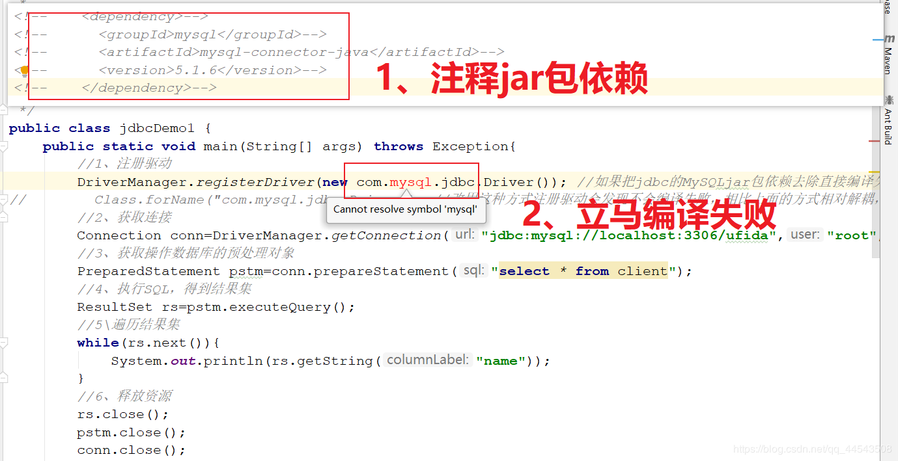
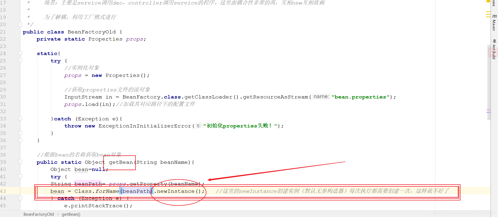

原文连接:https://www.cnblogs.com/yichunguo/p/12093138.html
@
1、 啥是耦合、解耦？
既然是程序解耦，那我们必须要先知道啥是耦合，耦合简单来说就是程序的依赖关系，而依赖关系则主要包括
1、 类之间的依赖
2、 方法间的依赖
比如下面这段代码：
public class A{
public int i;
}
public class B{
public void put(A a){
System.out.println(a.i);
}
}上面这个例子中A类和B类之间存在一种强耦合关系，B类直接依赖A类，B类的put方法非A类类型不可，我们把这种情况叫做强耦合关系。
实际开发中应该做到：编译期不依赖，运行时才依赖。怎么理解呢？我们很容易想到多态向上转型，是的，编译时不确定，运行时才确定,当然接触面更广一点的童鞋会想到接口回调，是的接口回调方式也能有效的解耦！如下代码：
//一个接口叫做Inter，里面定义了一个happy（）方法，有两个类A、B实现了这个接口
interface Inter{
void happy();
}
class A implements Inter{
@Override
public void happy() {
System.out.println("happy...A");
}
}
class B implements Inter{
@Override
public void happy() {
System.out.println("happy...B");
}
}
public class Test{
public void happys(Inter inter){
inter.happy();
}
}是的，如上代码正是典型的接口回调，Test类中的happys方法参数变的相对灵活起来，代码中Test类与A类、B类之间就存在一种弱耦合关系，Test类的happys方法的参数可以使A类类型也可以是B类类型，不像强耦合关系中非A类类型不可的情形。
从某一意义上来讲使用类的向上转型或接口回调的方式进行解耦都是利用多态的思想！
当然解耦的方式还有很多，从根本意义上讲实现低耦合就是对两类之间进行解耦，解除类之间的直接关系，将直接关系转换成间接关系，从而也有很多设计模式也对程序进行解耦，比如：适配器模式、观察者模式、工厂模式....总之，必须明确一点：耦合性强的程序独立性很差！
2、 jdbc程序进行解耦
先来看一段代码：
//1、注册驱动
DriverManager.registerDriver(new com.mysql.jdbc.Driver()); //如果把jdbc的MySQLjar包依赖去除直接编译失败提示没有mysql
//2、获取连接
Connection conn=DriverManager.getConnection("jdbc:mysql://localhost:3306/ufida","root","root");
//3、获取操作数据库的预处理对象
PreparedStatement pstm=conn.prepareStatement("select * from client");
//4、执行SQL，得到结果集
ResultSet rs=pstm.executeQuery();
//5\遍历结果集
while(rs.next()){
System.out.println(rs.getString("name"));
}
//6、释放资源
rs.close();
pstm.close();
conn.close();等等等等，好熟悉好怀念的代码.....
没错就是jdbc的代码，不是用来怀旧的，而是如果这样设计，你会觉得这样的程序耦合性如何？又如何进行解耦？先仔细思考一番。
一分钟过去了.....
两分钟过去了.....
好了，我们都知道jdbc连接MySQL需要一个mysql-connector的jar包，如果我们把这个jar包依赖或者这个jar包给去掉，显然上面的这个程序会编译报错，如下图

显然这样的程序耦合性过高！于是我们可以这样设计，将第一步的注册驱动代码new的方式改成反射的方式如下：
//1、new的方式注册驱动
DriverManager.registerDriver(new com.mysql.jdbc.Driver()); //如果把jdbc的MySQLjar包依赖去除直接编译失败提示没有mysql相关的jar包
改为如下方式
//2、反射的方式注册驱动
Class.forName("com.mysql.jdbc.Driver"); //改用这种方式注册驱动会发现不会编译失败，相比上面的方式相对解耦，但是依然存在缺陷：若连接改为Oracle数据库，这里的字符串又要进行改动！正如注释的解释一样，又一个缺陷就浮现了：若连接改为Oracle数据库，这里的字符串又要进行改动！
于是对于这个jdbc程序来说就有这样的一个解耦思路：
第一步：通过反射来创建对象，尽量避免使用new关键字
第二步：通过读取配置文件来获取创建的对象全限定类名
3、传统dao、service、controller的程序耦合性
顺着jdbc程序的解耦思路，我们再来看看传统dao、service、controller的程序耦合性分析
由于只是一个demo，省去dao层的操作.....
定义一个Service接口
public interface IAccountOldService{
public void save();
}Service接口实现类
public class AccountServiceOldImpl implements IAccountOldService{
@Override
public void save() {
System.out.println("save成功一个账户....");
}
}controller代码：
public class AccountCencollertOld {
public static void main(String[] args) {
IAccountOldService iaccount=new AccountServiceOldImpl ();
iaccount.save(); //运行结果：save成功一个账户....
}
}到这里，有何想法？表面上来看是没有一点问题的，So Beautiful，但仔细的看。表现层与业务层、业务层与持久层紧紧的互相依赖关联，这与我们开发程序的高内聚低耦合原则相违背,哦My God,So Bad！我们顺着jdbc程序的解耦思路，我们应该尽量避免使用new关键字，我们发现这些层里面service层new 持久层dao，controller表现层new 业务层service....太糟糕了
那么对此，你有何解耦思路？
4、使用工厂模式实现解耦
别想了，工厂模式实现程序解耦你值得拥有！顺着jdbc程序的解耦思路：
1、通过读取配置文件来获取创建的对象全限定类名
2、通过反射来创建对象，尽量避免使用new关键字
首先在resources目录下中写一个bean.properties配置类，具体内容如下
accountServiceOld=com.factory.service.impl.AccountServiceOldImpl接着使用工厂方法代码：
/**
* 一个创建Bean对象的工厂
*
* 1、需要一个配置文件来配置我们的service和dao 配置文件的内容：唯一标识=全限定类名（key-value）
* 2、通过读取配置文件中配置的内容，反射创建对象
*
* 场景：主要是service调用dao，controller调用service的程序。这里面耦合性非常的高，互相new互相依赖
*
* 为了解耦，利用工厂模式进行
*/
public class BeanFactoryOld {
private static Properties props;
static{
try {
//实例化对象
props = new Properties();
//获取properties文件的流对象
InputStream in = BeanFactory.class.getClassLoader().getResourceAsStream("bean.properties");
props.load(in);//加载其对应路径下的配置文件
}catch (Exception e){
throw new ExceptionInInitializerError("初始化properties失败！");
}
}
//根据bean的名称获取bean对象
public static Object getBean(String beanName){
Object bean=null;
try {
String beanPath= props.getProperty(beanName);
bean = Class.forName(beanPath).newInstance(); //这里的newInstance创建实例（默认无参构造器）每次执行都需要创建一次
} catch (Exception e) {
e.printStackTrace();
}
return bean;
}
}
此时，controller的代码就可以编写为
/**
* 这里模拟一个controller调用service
*
*/
public class AccountCencollertOld {
public static void main(String[] args) {
// IAccountOldService iaccount=new AccountServiceOldImpl (); //使用工厂方法不再通过new方式
IAccountOldService iaccount= (IAccountOldService) BeanFactoryOld.getBean("accountServiceOld");
iaccount.save(); //运行结果：save成功一个账户.... 说明成功调用了service
}
}通过运行结果，属实没毛病，成功降低程序耦合！So Beautiful！先高兴一会吧，因为马上出现.....但是，随之而来的问题又出现了，我们对这个controller进行一下改写
for(int i=0;i<5;i++){
IAccountOldService iaccount= (IAccountOldService) BeanFactoryOld.getBean("accountServiceOld");
iaccount.save();
}打印结果：
com.factory.service.impl.AccountServiceImpl@1540e19d
save成功一个账户....
com.factory.service.impl.AccountServiceImpl@677327b6
save成功一个账户....
com.factory.service.impl.AccountServiceImpl@14ae5a5
save成功一个账户....
com.factory.service.impl.AccountServiceImpl@7f31245a
save成功一个账户....
com.factory.service.impl.AccountServiceImpl@6d6f6e28
save成功一个账户....打印的是五个不同的对象，说明是多例的，每次调用getBean的时候都会newInstance出一个新对象，如下

多例每次都要创建对象，资源浪费、效率低下
针对单例多例情况，我们再对service业务层代码进行修改：
public class AccountServiceImpl implements IAccountService {
//定义类成员
private int i=1;
@Override
public void save() {
System.out.println("save成功一个账户....");
System.out.println(i);
i++;
}
}运行controller代码，运行结果
save成功一个账户....
1
save成功一个账户....
1
save成功一个账户....
1
save成功一个账户....
1
save成功一个账户....
1why？多例因为每次都是新的对象，上面也验证过了，因此每次创建新对象都会初始化一次，重新赋值，所以都是1，如果我们把类成员改为局部成员变量如下
public class AccountServiceOldImpl implements IAccountOldService {
// private int i=1;
@Override
public void save() {
int i=1; //改为局部变量
System.out.println("save成功一个账户....");
System.out.println(i);
i++;
}
}不用猜，运行结果同样是1。算了还是运行一下吧哈哈哈
save成功一个账户....
1
save成功一个账户....
1
save成功一个账户....
1
save成功一个账户....
1
save成功一个账户....
1说了这么多，通过观察service和dao之间单不单例好像无所谓，因为他们之间并没有业务方法中改变的类成员，所以并不需要多例来保证线程安全。那说这些有何意义？不要忘了，由于使用了工厂改进如下中的.newInstance创建实例（默认无参构造器）每次执行都需要创建一次，这样就不好了（浪费资源），因此我们要设计出只newInstance创建一次实例就很完美了，这也是我为啥要在service和controller中都添加一个Old关键字的原因了，接下来我们来看看工厂是如何改进的！
5、工厂模式改进
为了不被搞晕，我们重新写代码，也就是重头开始写代码~其实就是把Old去掉~
由于只是一个demo，省去dao层的操作.....
定义一个Service接口
public interface IAccountService {
public void save();
}Service接口实现类
public class AccountServiceImpl implements IAccountService{
@Override
public void save() {
System.out.println("save成功一个账户....");
}
}controller代码：
/**
* 这里模拟一个controller调用service
*
*/
public class AccountCencollert {
public static void main(String[] args) {
// IAccountService iaccount=new AccountServiceImpl();
IAccountService iaccount= (IAccountService) BeanFactory.getBean("accountService");
iaccount.save(); //运行结果：save成功一个账户.... 说明了成功调用了service
}
}改进的工厂方法代码：
public class BeanFactory {
private static Properties props;
//定义一个map容器，用于存放创建的对象
private static Map<String,Object> beans; //改进的代码============
static{
try {
//实例化对象
props = new Properties();
//获取properties文件的流对象
InputStream in = BeanFactory.class.getClassLoader().getResourceAsStream("bean.properties");
props.load(in);//加载其对应路径下的配置文件
////////////////////以下是改进的代码=======================
//实例化容器
beans=new HashMap<String,Object>();
//取出配置文件中所有的key值
Enumeration<Object> keys = props.keys();
//遍历枚举
while(keys.hasMoreElements()){
//取出每个key
String key = keys.nextElement().toString();
//根据key取出对应的value (这里因为每个value值对应着类路径)
String beanPath = props.getProperty(key);
//反射创建对象
Object value = Class.forName(beanPath).newInstance();
//把key和value存入容器中
beans.put(key,value);
}
}catch (Exception e){
throw new ExceptionInInitializerError("初始化properties失败！");
}
}
//随着代码的改进，我们就可以简化下面的获取bean对象的方法，如下代码
/**
* 根据bean的名称获取对象（单例）
*/
public static Object getBean(String beanName){
//通过Map容器对应key来获取对应对象
return beans.get(beanName); //这里通过Map容器中获取，这样就不会每次都创建一次实例！
}
//不再使用下面的方法
/*
//根据bean的名称获取bean对象
public static Object getBean(String beanName){
Object bean=null;
try {
String beanPath= props.getProperty(beanName);
bean = Class.forName(beanPath).newInstance(); //这里的newInstance创建实例（默认无参构造器）每次执行都需要创建一次，这样就不好了
} catch (Exception e) {
e.printStackTrace();
}
return bean;
}*/
}从上面改进的工厂代码，我们可以发现一开始就定义一个Map容器，用于存放创建的对象，为啥要先定义一个Map容器呢？用一个容器将这个实例装起来，这是由于不把这个对象装存起来的话，这个对象不使用很容易被GC掉，何况我们现在只使用这一个对象！
定义一个Map容器存放配置好的文件中的每个对象，之后我们就直接提供一个根据Map的key来取value的getBean方法，这样不仅仅扩展了程序的配置文件的灵活性而且还保证了只产生一个对象，保证资源不浪费，So Beautiful !
那如何证明已经是单例的模式了呢？很简单，如下设计一下service业务层、controller表现层代码即可：
service业务层：添加一个类成员属性，并在方法内部 i++;
public class AccountServiceImpl implements IAccountService {
private int i=1; //类成员属性
@Override
public void save() {
System.out.println("save成功一个账户....");
System.out.println(i);
i++;//二次改革代码
}
}controller表现层: 创建调用工厂5次创建对象的方法
/**
* 这里模拟一个controller调用service
*
*/
public class AccountCencollert {
public static void main(String[] args) {
for(int i=0;i<5;i++){
IAccountService iaccount= (IAccountService) BeanFactory.getBean("accountService");
System.out.println(iaccount); //打印的是五个不同的对象，说明是多例的
iaccount.save(); //会发现打印的i值都是1，并没有自增成功
}
}运行代码结果：
com.factory.service.impl.AccountServiceImpl@1540e19d
save成功一个账户....
1
com.factory.service.impl.AccountServiceImpl@1540e19d
save成功一个账户....
2
com.factory.service.impl.AccountServiceImpl@1540e19d
save成功一个账户....
3
com.factory.service.impl.AccountServiceImpl@1540e19d
save成功一个账户....
4
com.factory.service.impl.AccountServiceImpl@1540e19d
save成功一个账户....
5发现，确实5个对象都是同一个，并且出现了改变类成员属性的现象。
如果我们把类成员属性改为局部成员属性呢？
public class AccountServiceImpl implements IAccountService {
@Override
public void save() {
int i=1; //局部成员属性
System.out.println("save成功一个账户....");
System.out.println(i);
i++;
}
}运行结果
com.factory.service.impl.AccountServiceImpl@1540e19d
save成功一个账户....
1
com.factory.service.impl.AccountServiceImpl@1540e19d
save成功一个账户....
1
com.factory.service.impl.AccountServiceImpl@1540e19d
save成功一个账户....
1
com.factory.service.impl.AccountServiceImpl@1540e19d
save成功一个账户....
1
com.factory.service.impl.AccountServiceImpl@1540e19d
save成功一个账户....
1看到这个结果，我们就能联想到，之前为什么servlet中为啥要避免定义类成员，原因就在这里！多例情况下，就不会出现这种情况！！！！
6、结语
到这里我们已经基本了解了程序间的耦合与解耦，并且对单例多例也一并进行了进一步的了解。而spring中正是使用工厂模式来实现程序解耦的，spring是一个大工厂, 或许你并没有察觉哈哈哈哈.....
如果本文对你有一点点帮助，那么请点个赞呗，你的赞同是我最大的动力，谢谢~
最后，若有不足或者不正之处，欢迎指正批评，感激不尽！如果有疑问欢迎留言，绝对第一时间回复！
欢迎各位关注我的公众号，里面有一些java学习资料和一大波java电子书籍，比如说周志明老师的深入java虚拟机、java编程思想、核心技术卷、大话设计模式、java并发编程实战.....都是java的圣经，不说了快上Tomcat车，咋们走！最主要的是一起探讨技术，向往技术，追求技术，说好了来了就是盆友喔...